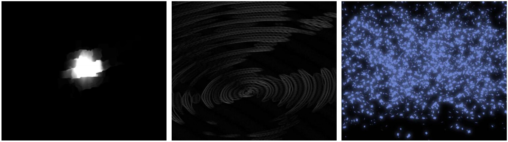
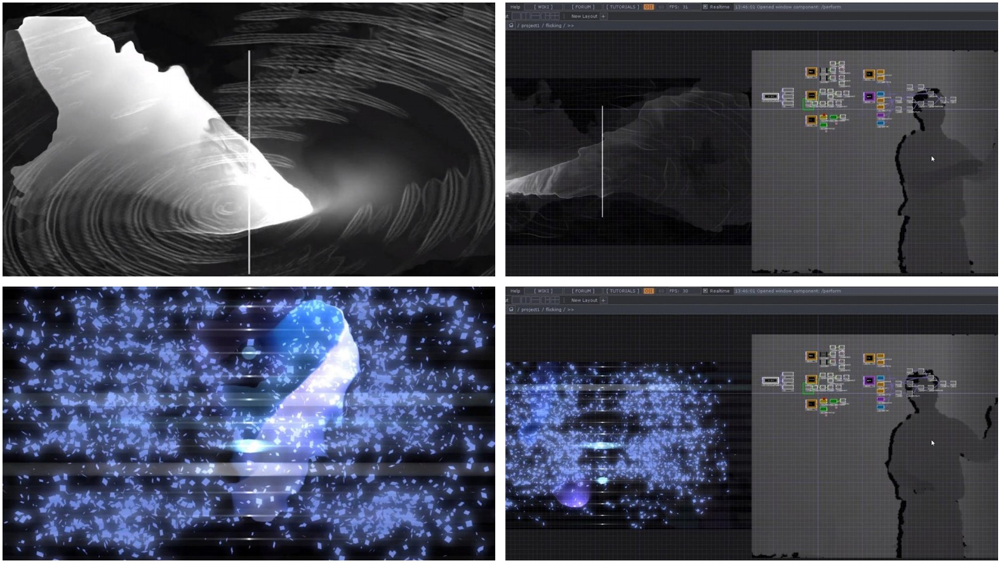

Keywords: neo instrument, TouchDesigner + Kinect + Ableton
[Group Work] with Hejun Zhang
[Time] February, 2021
+Description
Our body desires to dance to the groove of music, so we think what if inversely, our body movements can generate music. In this project, we wish people to immerse in the musical world without the limitation of physical instrument. By flicking the air, the player's body will engage in the flow of musical notes. Basically, we designed two modes of interacting, the rhythm mode and the tuning mode, which respectively focus on the rhythmic progression and musical composition. All the actions are controlled by the player's body motions, such as triggering notes, adjusting pitches and tempos and shifting modes.
+Video Demonstartion
+Basic Elements

1) Smoke effect (triggered by the hand trail)
2) Ripple effect (triggered by the sound)
3) Gleamy fragments (interacted with the hand trail)
+Two Modes

1)Rhythm Mode: As the player’s hand waves across the white line, the next note of the preset music will be triggered.
2)Tuning Mode:
The right hand of the player controls the pitch, while the left hand controls the tempo.